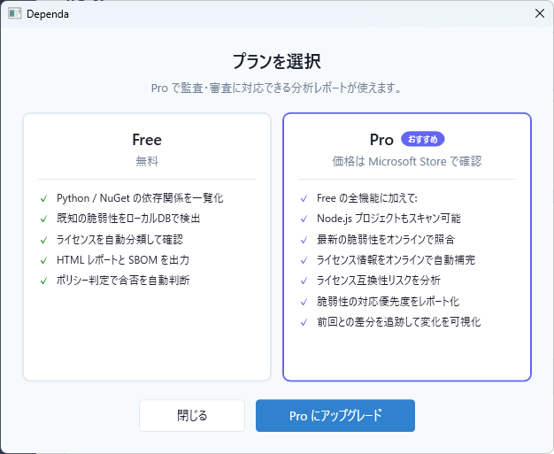
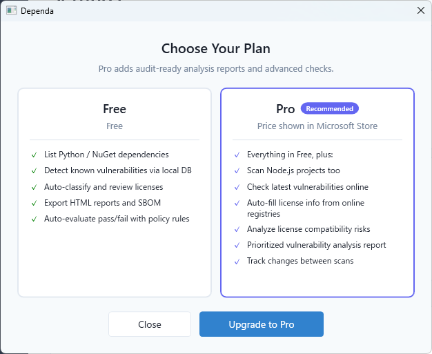

Chapter 14: ライセンスと購入
Free / Pro プランの違いと Pro の購入方法（v2.0）
Free / Pro プラン比較
| 機能 | Free | Pro |
|---|---|---|
| SBOM インポート（CycloneDX / SPDX 自動判別） | ✓ | ✓ |
| フォルダスキャン（Python: requirements.txt, pyproject.toml, poetry.lock, uv.lock） | ✓ | ✓ |
| フォルダスキャン（Node.js: package.json, package-lock.json） | ✓ | ✓ |
| ローカル脆弱性データベースによる照合 | ✓ | ✓ |
| ローカルライセンスデータベースによる分類 | ✓ | ✓ |
| リスク分析（RiskReason / RecommendedAction / Evidence / Confidence） | ✓ | ✓ |
| ポリシー判定（許可 / 要承認 / 禁止） | ✓ | ✓ |
| SBOM 生成（CycloneDX 1.5 JSON） | ✓ | ✓ |
| AI Governance 分析 | ✓ | ✓ |
| IaC 対応（Terraform / Bicep / ARM JSON） | ✓ | ✓ |
| レビュー件数 | 5 件まで | 無制限 |
| HTML レポート | ウォーターマーク付き | 完全版（ウォーターマークなし） |
| 承認ワークフロー（PendingApproval / Returned） | — | ✓ |
| SBOM 差分（Diff） | — | ✓ |
| オンライン補完（PyPI / npm / NuGet ライセンス取得） | — | ✓ |
| OSV API オンライン脆弱性照合 | — | ✓ |
| Delta Scan（差分スキャン） | — | ✓ |
| 例外管理 | — | ✓ |
| 複数プロジェクト管理 | — | ✓ |
| AI プロンプト生成 | — | ✓ |

Free / Pro プラン選択ダイアログ
Pro の購入方法
- Dependa を起動し、設定画面（歯車アイコン）を開きます。
- 「Pro にアップグレード」ボタンをクリックします。
- Microsoft Store の購入画面が表示されます。
- Microsoft アカウントでサインインし、購入を完了します。
- 購入後、アプリを再起動すると Pro 機能が有効になります。
Pro ライセンスは Microsoft Store のアプリ内購入（Add-on）として提供されます。

設定画面 — Pro ライセンスの状態確認とアップグレード
ライセンスの確認
現在のライセンス状態は設定画面で確認できます。Pro が有効な場合は「Pro」バッジが表示されます。
Free 版のウォーターマークについて
Free 版で生成される HTML レポートには「Free Edition」のウォーターマーク（透かし）が表示されます。レポートの内容は閲覧可能ですが、公式な提出用途には Pro 版をご利用ください。
Chapter 14: Licensing & Purchase
Free vs Pro plan differences and how to purchase Pro (v2.0)
Free / Pro Plan Comparison
| Feature | Free | Pro |
|---|---|---|
| SBOM Import (CycloneDX / SPDX auto-detection) | ✓ | ✓ |
| Folder Scan (Python: requirements.txt, pyproject.toml, poetry.lock, uv.lock) | ✓ | ✓ |
| Folder Scan (Node.js: package.json, package-lock.json) | ✓ | ✓ |
| Local vulnerability database lookup | ✓ | ✓ |
| Local license database classification | ✓ | ✓ |
| Risk Analysis (RiskReason / RecommendedAction / Evidence / Confidence) | ✓ | ✓ |
| Policy verdict (Allowed / NeedApproval / Prohibited) | ✓ | ✓ |
| SBOM generation (CycloneDX 1.5 JSON) | ✓ | ✓ |
| AI Governance Analysis | ✓ | ✓ |
| IaC Support (Terraform / Bicep / ARM JSON) | ✓ | ✓ |
| Review items | Up to 5 | Unlimited |
| HTML Reports | With watermark | Full (no watermark) |
| Approval Workflow (PendingApproval / Returned) | — | ✓ |
| SBOM Diff | — | ✓ |
| Online Enrichment (PyPI / npm / NuGet license lookup) | — | ✓ |
| OSV API online vulnerability lookup | — | ✓ |
| Delta Scan | — | ✓ |
| Exception Management | — | ✓ |
| Multiple Project Management | — | ✓ |
| AI Prompt Generation | — | ✓ |

Free / Pro plan selection dialog
How to Purchase Pro
- Open Dependa and go to Settings (gear icon).
- Click the "Upgrade to Pro" button.
- The Microsoft Store purchase page will appear.
- Sign in with your Microsoft account and complete the purchase.
- After purchasing, restart the app to activate Pro features.
The Pro license is offered as a Microsoft Store in-app purchase (Add-on).

Settings screen — check Pro license status and upgrade
Checking Your License
You can check your current license status in the Settings panel. If Pro is active, a "Pro" badge will be displayed.
Free Edition Watermark
HTML reports generated in the Free edition include a "Free Edition" watermark. The report content is fully readable, but for official submissions, please use the Pro edition.